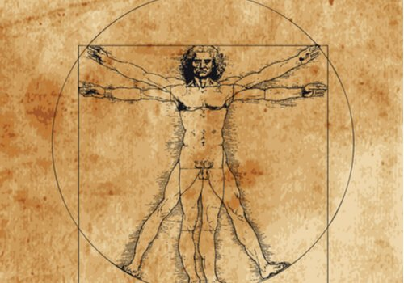
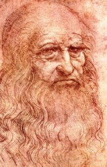
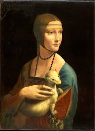

|
Leonardo da Vinci, el homo universalis, el sabio renacentista, el artista versado en todos los ámbitos del
conocimiento humano.
No sólo era artista, también fue una eminencia en aerodinámica, cocina, hidráulica, anatomía, poesía, botánica. Y por supuesto, por lo que lo conocemos hoy: por su pintura, escultura y arquitectura. Gracias a ello forma parte, junto a Miguel Ángel y Rafael, de la santísima trinidad del arte renacentista. Ya en la época su vida fue una leyenda, alimentada por escrituras crípticas, inventos futuristas y obras maestras de la pintura, pero se saben ciertas cosas de su biografía: Leonardo nació en 1452 en la villa toscana de Vinci, hijo de una campesina y un notario, que tendría 11 hijos (todos varones) en total. Su insaciable curiosidad se manifestó de niño: ya dibujaba animales mitológicos, híbridos entre realidad y fantasía. 1ª leyenda: Su padre entró en casa y se asustó al ver una medusa con serpientes en la cabeza. Era un dibujo. Leonardo perfeccionó en el taller de Verrocchio pintura, escultura y demás artes. No tardó en superar a su maestro. Pronto se interesó en una nueva técnica llegada de los Países Bajos: la pintura al óleo. Con ella innovó en composición y claroscuro. Se traslada de corte en corte: a la Florencia de los Médicis, al Milán de Ludovico Sforza… No sólo como artista. También como ingeniero militar (Italia estaba en continua guerra entre sus múltiples mini-estados), urbanista, músico y luthier. Durante años desarrolló increíbles tratados científicos y futuristas ingenios: el submarino, misiles, escafandras, helicópteros… A los 24 años es acusado de «sodomía». Leonardo era homosexual, y aunque en la época era bastante habitual, quedaría marcado socialmente. Aún así, en el cinquecento ya era uno de los mayores maestros de Italia. Arte y ciencia eran su mundo. No dejó nada sin experimentar… Hasta la hostelería: con Botticelli abrió una taberna en la que fue cocinero, llamada «La Enseña de las Tres Ranas de Sandro y Leonardo». Hablando de esto, hay que decir que el artista era estrictamente vegetariano. Incluso llegó a llamar a los omnívoros «devoradores de cadáveres». Y hablando de esto, también robaba cadáveres para diseccionar. Pasó sus últimos años en Roma y finalmente en el palacio de Cloux, como «primer pintor, arquitecto y mecánico del rey». Su brazo derecho quedó paralizado, pero tenía una mano izquierda igual de hábil. De hecho se sabe que pese a su dislexia, podía escribir con una mano hacia adelante, y con la otra hacia atrás. El genio no dejaría de trabajar en toda disciplina conocida y por conocer hasta el mismo día de su muerte y hoy es considerado uno de los artistas más grandes de la historia del arte. |
 La Gioconda |
Las Pinturas de |
 Hombre de Vitruvio |
|  Autorretrato |
 La Última Cena |
 La Dama del Armiño |